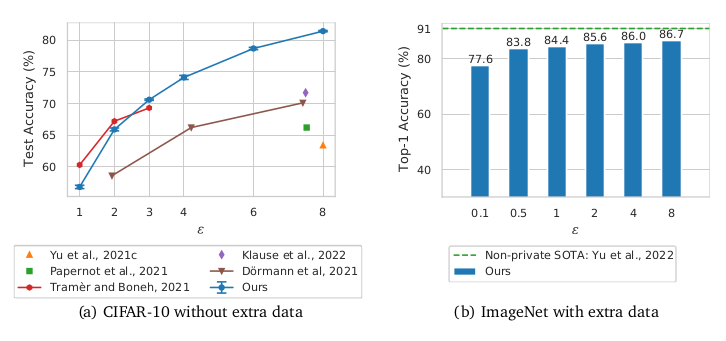
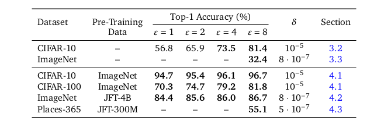

(DP-SGD), el método de entrenamiento de DP más popular para el aprendizaje profundo, realiza esta protección mediante la inyección de ruido durante el entrenamiento.
Voy a trabajar en la traducción del paper “Unlocking High-Accuracy Differentially Private Image Classification through Scale”, este documento consta de 6 secciones y cada post será una de ellas. Como parte de mi aprendizaje considero importante generar información en mi lengua materna.
1.- Introducción
Los modelos de Machine Learning entrenados de manera estándar pueden ser atacados por un adversario que busca revelar los datos con los que se entrenó el modelo. Por ejemplo, Carlini et al. (2021b) demuestra que los adversarios pueden generar y detectar secuencias de texto de un conjunto de entrenamiento de un “large transformer language model”. Mientras, Balle et al. (2022) Demostró que poderosos adversarios pueden reconstruir imágenes en el conjunto de entrenamiento de un clasificador entrenado en CIFAR-10. Junto a otros resultados (Carlini et al., 2021a; Choquette-Choo et al., 2021; Liu et al., 2021), estos estudios demuestran que los modelos entrenados con datasets confidenciales presentan un riesgo significativo de privacidad.
La Privacidad Diferencial es una técnica para mitigar ataques de privacidad dirigidos a filtrar ejemplos individuales de entrenamiento, y ya ha sido adoptada en la práctica por una variedad de organizaciones públicas y privadas (Abowd, 2018; Apple Differential Privacy Team, 2017; Bird, 2020; Erlingsson, 2014; McMahan and Thakurta, 2022; Nayak, 2020). Un Algoritmo diferencialmente privado es un algoritmo aleatorio que proporciona una garantía formal de que cualquier ejemplo individual en el conjunto de entrenamiento solo puede influir en la distribución de salida del algoritmo en una cantidad pequeña y preestablecida. Esta garantía de privacidad, es denominada \((\epsilon, \delta)-DP\), está definida por dos parámetros \((\epsilon, \delta)\) a los cuales nos referimos como el presupuesto de privacidad o “privacy budget” en inglés. Cuantos más pequeños sean estos dos parámetros; más cercanas serán las distribuciones de salida entre conjuntos de entrenamiento que difiere en un solo ejemplo, y por lo tanto, más difícil será para un adversario inferir si un solo ejemplo o single data point fue incluido durante el entrenamiento.
El método más popular para el entrenamiento de redes neuronales con DP es Differentially Private Stochastic Gradient Descent (DP-SGD) (Abadi et al., 2016). DP-SGD sustituye la estimación habitual de gradiente mini-batch por una versión privatizada, en el que el gradiente de cada ejemplo de entrenamiento se recorta a una norma máxima. Además, el ruido gaussiano proporcional a la norma de recorte se agrega a la suma de los gradientes recortados, lo que es suficiente para enmascarar la contribución de cualquier ejemplo individual a la suma. Cada evaluación de un gradiente de mini-batch (privatizado) incurre en un coste de privacidad, y se utiliza un contador de privacidad (Abadi et al., 2016; Mironov et al., 2019) para rastrear el presupuesto total de privacidad gastado a lo largo del entrenamiento. Estos parámetros aumentan con cada mini-batch visto durante el entrenamiento y disminuyen con la escala del ruido agregado, lo que limita la cantidad de iteraciones de entrenamiento que podemos realizar con un presupuesto de privacidad fijo mientras se mantiene bajo control la variación en la estimación del gradiente.

Figura 1 | (a) Cuando entrenamos en CIFAR-10 sin datos adicionales, mejoramos los resultados publicados previamente bajos \(( \epsilon, 10^{-5} )-DP\) siempre que \(\epsilon ≥ 3\). En \(\epsilon = 8\), mejoramos el SOTA anterior de Klause et al. (2022) en un 9,7%. Tenga en cuenta que informamos la media y el error estándar en 5 ejecuciones independientes. (b) Al ajustar un NFNet-F3 preentrenado (Brock et al., 2021b) en ImageNet bajo \((8, 8 · 10^{-7})-DP\), logramos una precisión del 86,7 % entre el top-1, solo un 4,3 % por debajo la actual SOTA no privada del 91,0% (Yu et al., 2022). También obtenemos una precisión del 83,8 % en el top-1 con una garantía mucho más estricta de \((0,5, 8 · 10^{-7})-DP\), que supera el rendimiento de muchos modelos no privados populares (p. ej., ResNet-50).
El entrenamiento con DP-SGD implica un delicado acto de equilibrio entre diferentes hiperparámetros como la cantidad de ruido agregado, el batch size, el número iteraciones de entrenamiento, para alcanzar el rendimiento óptimo dentro de un presupuesto de privacidad específico. En particular, el ruido agregado al gradiente es una barrera importante para la optimización, lo que generalmente resulta en una degradación significativa en el rendimiento en comparación con el entrenamiento estándar no privado o “non-private” en inglés (Dörmann et al., 2021; Klause et al., 2022; Kurakin et al., 2022). Además, varios autores han postulado que los modelos altamente sobre parametrizados, que funcionan bien en entornos no privados, no funcionan bien cuando se usan con DP-SGD, porque la norma del ruido agregado aumenta con la dimensión de la gradiente (Kurakin et al., 2022; Shen et al., 2021; Tramèr and Boneh, 2021; Yu et al., 2021b), lo que lleva a una “maldición de la dimensionalidad”. En consecuencia, muchos trabajos se han centrado en desarrollar arquitecturas especializadas para formación privada (Papernot et al., 2021; Tramèr and Boneh, 2021), o en reducir la dimensionalidad del modelo durante el entrenamiento (Golatkar et al., 2022; Yu et al., 2021b; Zhang et al., 2021; Zhou et al., 2021).
Por el contrario, mostramos que las arquitecturas estándar sobre parametrizadas, que logran un rendimiento cercano al estado del arte en el entrenamiento no privado, también pueden funcionar muy bien cuando se entrenan con DP-SGD si se ajustan correctamente. Para lograr esto, presentamos una serie de técnicas que ayudan a la convergencia y aseguran la capacidad de entrenamiento en la inicialización, y exploramos los beneficios de usar modelos previamente entrenados. Nuestras principales contribuciones se enumeran a continuación:
- Describimos un conjunto de técnicas simples que, cuando se combinan, mejoran significativamente el rendimiento DP-SGD. Primero, revisamos las ideas que anteriormente se identificaron como útiles para el entrenamiento privado, incluido el uso de large batch size (McMahan et al., 2018b) y el reemplazo de las capas de normalización de lotes con alternativas que garantizan una buena propagación de la señal en la inicialización (van der Maaten and Hannun, 2020). Además, proponemos modificaciones adicionales que mejoran la tasa de convergencia de DP-SGD y que no se han utilizado previamente para el entrenamiento privado. Específicamente, sugerimos usar la estandarización de peso en capas convolucionales (Qiao et al., 2019) aprovechando los beneficios de data augmentations promediando gradientes, por ejemplo, en múltiples augmentations de la misma imagen antes de la operación de recorte (Hoffer et al., 2019) y aplicar técnicas de promedio de parámetros (Polyak and Juditsky, 1992).
- Al aplicar las técnicas anteriores, mejoramos significativamente el rendimiento de DP-SGD al entrenar modelos sobreparametrizados inicializados aleatoriamente.
- Entrenando Wide-ResNets (Zagoruyko and Komodakis,2016) en CIFAR-10 sin datos adicionales, logramos un nuevo SOTA de 81.4% bajo \((8, 10^{-5})-DP\).
- Esta es una mejora sustancial con respeto al SOTA anterior de 71,7% logrado con \((7.5, 10^{-5})-DP\) (Klause et al.,2022).
- Como se muestra en la Figura 1(a), logramos resultados SOTA en esta tarea en un rango de valores de \(\epsilon\) entre 3 y 8. También logramos una nueva precisión SOTA top-1 en ImageNet del 32,4 % en \((8, 8*10^{-7})-DP\) al entrenar un ResNet-50 sin normalizador (NF-ResNet-50) (Brock et al., 2021a; He et al., 2016).
Tabla 1 | Un resumen de los mejores resultados proporcionados en este documento cuando se entrena con DP-SGD. Todos los números en negrita son SOTA. Para los experimentos CIFAR-10 y CIFAR-100, informamos la precisión media en 5 ejecuciones independientes. Todos los experimentos en CIFAR usan Wide-ResNets con normalización de grupo, mientras que los experimentos ImageNet y Places-365 usan NF-ResNets o NFNets. Consulte las secciones correspondientes para obtener más detalles.

- Mostramos que el entrenamiento previo no privado en datos públicos/no confidenciales, seguido de un fine-tuning con DP-SGD en el conjunto de datos privados, produce beneficios de rendimiento notables en los puntos de referencia de clasificación de imágenes. Por ejemplo, cuando hacemos fine-tuning de forma privada un NF-ResNet-200 entrenado previamente en JFT-300M (Sun et al., 2017), logramos una precisión del 81,3% en el top-1 en ImageNet por debajo de \((8, 8*10^{-7})-DP\). Observamos mejoras adicionales en el rendimiento al aumentar tanto el tamaño del modelo como el tamaño del conjunto de datos de preentrenamiento, logrando una precisión del 86,7% en el top-1 en \((8, 8*10^{-7})-DP\) con un NFNet-F3 (Brock et al., 2021b) entrenado previamente en JFT-4B. Esta red también obtiene una precisión del 83,8% en el top-1 con un presupuesto de privacidad mucho más ajustado de \((0.5, 8*10^{-7})-DP\). A modo de comparación, el fine-tuning de la misma red pre entrenada en ImageNet sin privacidad alcanza el 88.5%.
- Brindamos información novedosa sobre cómo los hiperparámetros óptimos se relacionan entre sí cuando se entra con DP. Observamos empíricamente que hay un presupuesto óptimo de iteraciones de entrenamiento dado un batch-size fijo, los batch sizes más grandes mejoran el accuracy de la validación, pero requieren más épocas de entrenamiento después de que el batch size supera un cierto umbral, y la elección óptima del learning-rate para DP-SGD es proporcional al batch size cuando el batch size es pequeño, pero constante para batch sizes más grande, similar al entrenamiento no privado.
Resumimos nuestros resultados clave en la Tabla 1, con nuestros resultados SOTA mostrados en negrita. Hacemos hincapié en que todos nuestros resultados utilizan arquitecturas de visión estándar que han demostrado funcionar bien para el entrenamiento no privado. Creemos que estos resultados son un paso significativo hacia una clasificación de imágenes privada diferencialmente útil en la práctica.
Esquema del paper.
- Brindamos una breve introducción a la privacidad diferencial y DP-SGD en la sección 2, donde también analizamos los desafíos que surgen al aplicar DP-SGD a deep networks.
- En la sección 3, describimos una variedad de técnicas que mejoran el rendimiento de las redes entrenadas con DP-SGD, logrando el rendimiento de SOTA en CIFAR-10 e ImageNet cuando se entrena sin datos adicionales.
- En la sección 4, mostramos que el fine-tuning privado de modelos fuertes previamente entrenados mejora drásticamente el rendimiento de la clasificación de imágenes privadas.
- Finalmente, proporcionamos información adicional sobre cómo los hiperparámetros de DP-SGD influyen en el rendimiento en la sección 5.
Reproductibilidad.
Para ayudar a los investigadores a reproducir y verificar nuestros resultados, lanzamos la implementación de DP-SGD utilizado en nuestros experimentos en https://github.com/deepmind/jax_privacy. También proporcionamos los scripts de configuración y los checkpoints pre entrenados necesarios para reproducir todos nuestros resultados en CIFAR-10 y CIFAR-100, así como nuestros resultados en ImageNet sin datos adicionales. Proporcionamos más detalles sobre nuestra implementación de DP-SGD en el Apéndice A, junto con una descripción de los pasos que llevamos a cabo para auditar su corrección.